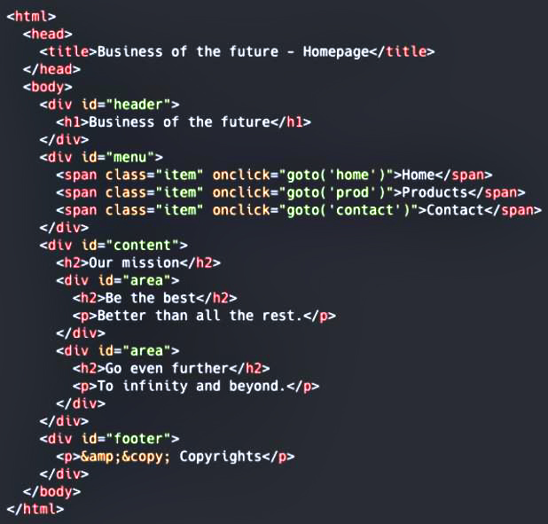

¿Qué es HTML5 semántico?
Código no semántico

HTML se creó originalmente como un lenguaje de marcado, para describir documentos en los inicios de Internet.
A medida que Internet creció y fue adoptado por más personas, sus necesidades cambiaron
El HTML5 semántico aborda esta deficiencia mediante la definición de etiquetas específicas para indicar
claramente qué papel desempeña el contenido que contienen esas etiquetas. Esa información explícita ayuda a robots / rastreadores
como Google y Bing a comprender mejor qué contenido es importante, cuál es una subsidiaria, cuál es para la navegación, etc.
Código semántico
¿Por qué necesito utilizar etiquetas HTML5 semánticas?
Las etiquetas semánticas tienen muchos beneficios más allá de la eficiencia pura y el rendimiento del sitio en los motores de búsqueda. Nos ayudan a construir mejores estructuras de sitios y, lo que es más importante, pueden mejorar seriamente la accesibilidad de los sitios web.
Y si "no le preocupa demasiado" la accesibilidad de su sitio, considere por un momento que, según Departamento Administrativo Nacional de Estadísticas (DANE), en Colombia hay 1.143.992 casos de personas con algún grado de discapacidad visual, que representan el 43,5 % del total de discapacitados del país.
Para los usuarios ciegos o con discapacidad visual que dependen de los lectores de pantalla para describir verbalmente lo que hay en una página, el uso adecuado de los elementos semánticos de HTML5 permitirá a los lectores de pantalla comunicar con mayor precisión su contenido al hacer que lo visual sea audible.